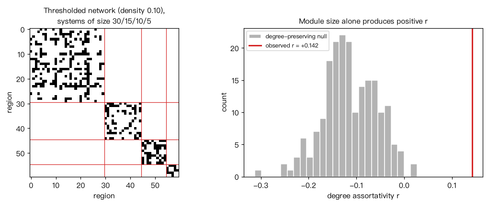

Example09 / 09
阈值化相关网络中的同配性——模块大小如何制造正的 r
模拟 60 个“脑区”的时间序列：4 个功能系统，大小分别为 30、15、10、5 个脑区，系统内共享一个波动。 用比例阈值保留最强的若干比例相关，得到二值网络，计算度同配 r，并与保度零模型比较； 再用 Newman (2003) 的类别同配系数检查边是否偏向连接同一系统的脑区。 解读：大系统里的脑区仅因“同伴多”而度高，且主要连向同系统（同样度高）的脑区，于是 r > 0； 这种同配来自模块大小与相关的传递性，并随阈值（密度）明显变化，不对应解剖上的“枢纽互连”。
Output输出图

Output文字输出
密度 0.05: 度同配 r = +0.058 密度 0.10: 度同配 r = +0.142 密度 0.20: 度同配 r = +0.490 密度 0.10: r = +0.142; 保度零模型 r = -0.113 ± 0.056; 单侧经验 p = 0.005 系统 0（30 个脑区）的平均度 = 7.5 系统 1（15 个脑区）的平均度 = 4.4 系统 2（10 个脑区）的平均度 = 5.0 系统 3（5 个脑区）的平均度 = 2.4 按功能系统的类别同配系数（手算）= 1.000；NetworkX = 1.000
Code代码
# 模拟 60 个“脑区”的时间序列：4 个功能系统，大小分别为 30、15、10、5 个脑区，系统内共享一个波动。
# 用比例阈值保留最强的若干比例相关，得到二值网络，计算度同配 r，并与保度零模型比较；
# 再用 Newman (2003) 的类别同配系数检查边是否偏向连接同一系统的脑区。
# 解读：大系统里的脑区仅因“同伴多”而度高，且主要连向同系统（同样度高）的脑区，于是 r > 0；
# 这种同配来自模块大小与相关的传递性，并随阈值（密度）明显变化，不对应解剖上的“枢纽互连”。
import numpy as np
import networkx as nx
rng = np.random.default_rng(1)
sizes = [30, 15, 10, 5]
labels = np.repeat(np.arange(len(sizes)), sizes)
N, T = len(labels), 300
X = 0.6 * rng.standard_normal((len(sizes), T))[labels] + rng.standard_normal((N, T))
R = np.corrcoef(X)
np.fill_diagonal(R, 0)
iu = np.triu_indices(N, 1)
def threshold(R, density):
thr = np.quantile(R[iu], 1 - density)
return nx.from_numpy_array((R > thr).astype(int))
for dens in [0.05, 0.10, 0.20]:
G = threshold(R, dens)
print(f"密度 {dens:.2f}: 度同配 r = {nx.degree_assortativity_coefficient(G):+.3f}")
G = threshold(R, 0.10)
nx.set_node_attributes(G, {i: int(labels[i]) for i in range(N)}, "system")
r_obs = nx.degree_assortativity_coefficient(G)
null = []
for s in range(200):
H = G.copy()
nx.double_edge_swap(H, nswap=10 * H.number_of_edges(), max_tries=10**6, seed=s)
null.append(nx.degree_assortativity_coefficient(H))
null = np.array(null)
p = (1 + np.sum(null >= r_obs)) / (len(null) + 1)
print(f"密度 0.10: r = {r_obs:+.3f}; 保度零模型 r = {null.mean():+.3f} ± {null.std(ddof=1):.3f}; 单侧经验 p = {p:.3f}")
deg = dict(G.degree())
for s_id, sz in enumerate(sizes):
print(f" 系统 {s_id}（{sz} 个脑区）的平均度 = {np.mean([deg[i] for i in G if labels[i] == s_id]):.1f}")
# 类别同配系数 r = (sum_i e_ii - sum_i a_i^2) / (1 - sum_i a_i^2)（无向网络 a_i = b_i）
e = np.zeros((len(sizes), len(sizes)))
for u, v in G.edges():
e[labels[u], labels[v]] += 1
e[labels[v], labels[u]] += 1
e /= e.sum()
a = e.sum(axis=1)
r_cat = (np.trace(e) - a @ a) / (1 - a @ a)
print(f"按功能系统的类别同配系数（手算）= {r_cat:.3f}；NetworkX = {nx.attribute_assortativity_coefficient(G, 'system'):.3f}")
# 作图：按系统排序的二值邻接矩阵（密度 0.10），以及度同配 r 的保度零分布
import matplotlib.pyplot as plt
fig, ax = plt.subplots(1, 2, figsize=(10, 4))
ax[0].imshow(nx.to_numpy_array(G, nodelist=range(N)), cmap="Greys", interpolation="none")
for b in np.cumsum(sizes)[:-1]:
ax[0].axhline(b - 0.5, color="C3", lw=0.8); ax[0].axvline(b - 0.5, color="C3", lw=0.8)
ax[0].set_title("Thresholded network (density 0.10),\nsystems of size 30/15/10/5", fontsize=10)
ax[0].set_xlabel("region"); ax[0].set_ylabel("region")
ax[1].hist(null, bins=25, color="0.7", edgecolor="white", label="degree-preserving null")
ax[1].axvline(r_obs, color="C3", lw=2, label=f"observed r = {r_obs:+.3f}")
ax[1].set_xlabel("degree assortativity r"); ax[1].set_ylabel("count"); ax[1].legend(fontsize=8)
ax[1].set_title("Module size alone produces positive r", fontsize=10)
plt.tight_layout(); plt.show()Run在浏览器中运行
首次加载 Python 环境约需 20–40 秒；可以修改参数后重新运行。